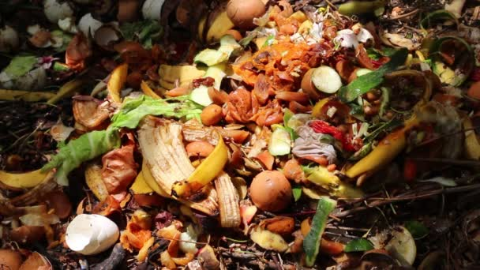

Lista de todos os itens que não podem ir para a compostagem

A compostagem é um processo que transforma resíduos orgânicos em adubo através da ação de microrganismos. Dessa forma, você pode compostar aproximadamente 60% dos seus resíduos, a fração orgânica deles. Os exemplos mais comuns desses resíduos costumam ser restos de frutas, legumes e verduras, mas além destes você ainda pode compostar cascas, grãos e sementes em geral, a borra e o filtro do café e até mesmo o saquinho do chá, o hashi da comida japonesa e a forminha do cupcake. São muitas possibilidades!
Embalagens de papelão, caixas de ovos, rolos de papel higiênico e inclusive a caixa da pizza, podem, por exemplo, ser tranquilamente compostados juntos com os restos dos alimentos. Tente rasgá-los em pedaços pequenos pra ajudar a acelerar o processo da decomposição. Nossos baldinhos ficarão felizes em recebê-los 🙂.
Já sobre o que não deve ir pro baldinho, as maiores dúvidas costumam ser sobre os alimentos cozidos, massas, carnes e ossos. Apesar de compostáveis, esses alimentos acabam gerando mau cheiro após alguns dias na composteira. Mas pra você não deixar de compostá-los e nem ter problemas com odores em sua casa, nossa sugestão é congelá-los.
Outra dúvida bastante comum é sobre o alho, a cebola e os alimentos cítricos. Quando a compostagem é realizada utilizando minhocas, eles realmente devem ser evitados devido à sua acidez. Mas como utilizamos microrganismos, esses alimentos podem ir pro baldinho sem problemas!
E ainda assim, alguns resíduos, apesar de inicialmente compostáveis, não devem ir pro nosso baldinho. Isso acontece porque eles possuem plásticos e polímeros na sua composição, ou porque podem contaminar o composto que produzimos ou ainda porque demoram muito tempo pra se decompor. Nesse caso, aconselhamos fortemente a reciclagem do que for possível.
Abaixo, segue uma lista bastante extensa e detalhada sobre o que pode e o que não pode ser compostado, mas caso tenha alguma dúvida ou queira sugerir alguma adição à lista é só entrar em contato pelo nosso email wastenotprojeto@gmail.com.
- É COMPOSTÁVEL!
- Frutas, legumes e verduras
- Cascas de ovos
- Aveia
- Casca de amendoim
- Casca de nozes e amêndoas
- Alho e cebola
- Ervas e especiarias
- Grãos de milho
- Grãos de soja
- Frutas e legumes congelados
- Tofu
- Algas e nori (alga para comida japonesa)
- Leite e derivados (desde que congelados)
- Farinhas
- Massas cruas (as cozidas, apenas congeladas)
- Doces, bolos e barras de cereais
- Geleias e goiabada
- Cereais matinais
- Biscoitos
- Migalhas de pão
- Cerveja e vinho (apenas o líquido)
- Batata frita e salgadinhos
- Bagaço de cana
- Sementes de girassol, gergelim e abóbora
- Borra de café
- Folhas de chá
- Sementes de frutas e legumes
- Polpa de frutas
- Sobras de comida
- Peixes
- Carnes e ossos (desde que congelados)
- Insetos mortos
- Resto de ração para animais
- Pelos de animais
- Comida para peixes
- Penas (não sintéticas)
- Grama cortada
- Restos de plantas
- Flores
- Plantas normais ou secas
- Restos de arranjos florais
- Plantas de aquário
- Pedaços de madeira
- Cascas de frutas ou árvores
- Folhas verdes ou secas
- Raízes e capim seco
- Palhas
- Aparas de lápis
- Giz de cera
- Serragem
- Cinzas de fogueira ou lareira
- Fósforos
- Espetos de madeira
- Espetos de bambu
- Palitos de dente
- Hashi (palitos de comida japonesa)
- Sachês de chá
- Rolhas de vinho (apenas de cortiça)
- Papel toalha
- Filtros de café
- Rolos de papel higiênico e de papel toalha
- Cartões (exceto modelos plastificados)
- Forminhas de cupcake
- Caixas de pizza (rasgada em pequenos pedaços)
- Guardanapos
- Pratos e sacolas de papel
- Embalagens de papelão (rasgada em pequenos pedaços)
- Caixas de ovos (apenas de papelão)
- Lenços de papel
- Poeira de limpeza doméstica
- Sujeira do aspirador de pó
- Algodão (inutilizado ou utilizado sem nenhum contato com produtos químicos)
- NÃO É COMPOSTÁVEL
- Vidro
- Metal
- Óleos, gorduras ou graxa
- Tintas
- Couro
- Plásticos
- Madeira tratada com pesticida ou verniz
- Produtos químicos em geral
- Papel colorido
- Papel-alumínio
- Pilhas e baterias
- Remédios
- Comida cozida (não congelada)
- Carnes vermelhas e brancas (não congelada)
- Fezes e urina humana e de animais domésticos
- Unhas cortadas
- Cabelo
- Absorventes e fraldas
- Bitucas de cigarro
- Chicletes
- Fio-dental
- Velas
- Balões de plástico
- Esponjas
- Conchas
- Tecido de algodão
- Pano de chão
- Jornal velho
- Cola branca